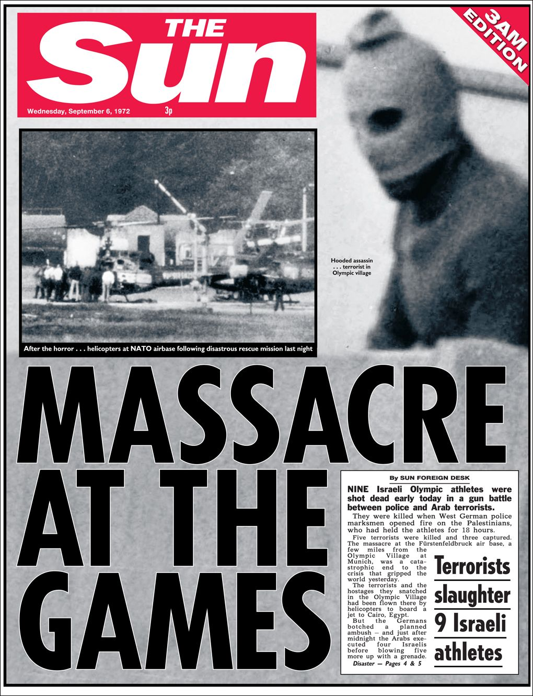

The Infamous Munich massacre, where Israli athletes were held hostaged by Palestinian terrorists who,
invaded the Olympic Village, a botched rescue attempt by Germany resulted in the deaths of all Israli hostages,
this event helped form Germany's elite-counterterrism unit, GSG 9
The basketball game between the US and Soviet Union is regarded as the most controversial,
because the US appeared to have won 50-49, but the final 3 seconds were played three times until the Soviets
came out 50-51, the United States refused their silver medals
